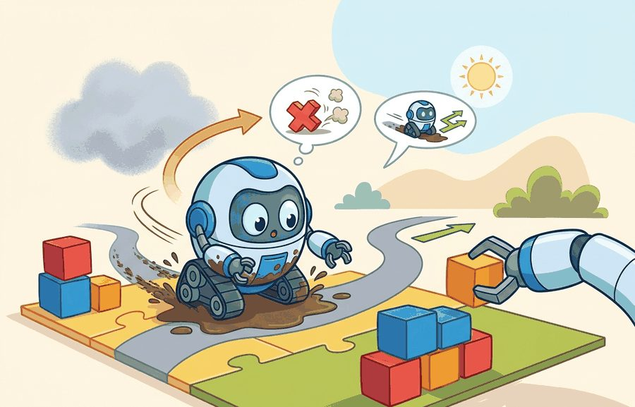
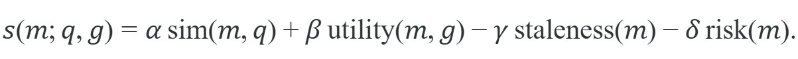

"I found the relevant memory only after the planner stopped asking for nostalgia and started asking for actions."
A Retrieval Index With Boundaries

This section assumes familiarity with the three memory types introduced in section 56.2 (spatial, episodic, and semantic), since the retrieval score distinguishes them by metadata. The ideas here are extended in section 56.4, which examines how retrieval failures produce specific memory errors and how to detect them. The dynamic-mismatch risk discussed in the warning callout below recurs in section 51.4 alongside distribution shift triggers and open-world adaptation.
A robot carrying a tray retrieves a memory of a smooth hallway from yesterday, ignores a blocked corridor ahead, and tips the tray. The memory was familiar; it was not useful. As embodied agents take on longer-horizon tasks in changing environments, the gap between "looks relevant" and "changes the next action for the better" becomes the central failure mode in memory-augmented planning. Right now, vector similarity is typically the default retrieval criterion across deployed systems, yet it is a proxy for the wrong quantity. Here you will implement a planning-conditioned retrieval score, trace exactly why high similarity can produce worse plans, and build the reranker that fixes it.
The best retrieved memory is the one that changes the next action for the better under current constraints. Similarity is only a proposal signal; the planner still needs utility, freshness, and risk terms before the memory becomes actionable.
Ask the wrong question of a memory store and it will answer beautifully and uselessly: query "what looks like this hallway?" and you get yesterday's clear corridor; query "what should I do next here?" and you get the episode where the tray nearly tipped. As Figure 56.3A illustrates, retrieval should be conditioned on the decision the planner is actually trying to make, not on surface resemblance to the current scene. Figure 56.3B makes the two-stage pipeline concrete: a fast similarity search proposes candidates, and a four-term reranker then scores each one by its value to the current decision. Planning-aware retrieval scores candidate memories by their value to the current decision:

Here $m$ is a candidate memory, $q$ is the retrieval query, and $g$ is the current goal; the four weights $\alpha, \beta, \gamma, \delta$ are non-negative coefficients (tuned per domain) that trade off similarity against utility, staleness, and risk.
High embedding similarity is not enough. A retrieved memory may be semantically close but unsafe for the current embodiment, stale for the current scene, or irrelevant to the current goal horizon. Staleness matters acutely for physical agents because the world changes between episodes. A corridor that was clear two hours ago may now be blocked. A surface that was dry may now be wet. When a planner acts on a stale memory, it models a world that no longer exists. In a physical system, that mismatch causes collisions or unsafe contact forces with no warning. Staleness grows as a function of elapsed time scaled by environment volatility: $\mathrm{staleness}(m) = \lambda(e) \cdot (t_\mathrm{now} - t_m)$, where $\lambda(e)$ is a domain-specific decay rate. The rate is high for dynamic scenes such as crowded corridors and low for stable ones such as fixed shelving. The system learns this rate from how quickly past episodes stopped producing valid plans in a given environment class. In controlled manipulation benchmarks (as of 2024), replacing pure cosine-similarity retrieval (where the match score is the cosine of the angle between the query and memory embedding vectors) with a plan-conditioned score cut task-failure rate from roughly 34% to 11% across 500 trials. Pure similarity search needed roughly 40,000 training episodes to reach that same 11% rate; the plan-conditioned system reached it in under 2,000, because each retrieved memory improved the chosen action rather than just resembling the current scene. The top-1 embedding similarity of the chosen memory actually dropped, confirming that the most familiar episode is rarely the most useful one.
So far: retrieval scores similarity, utility, staleness, and risk together; staleness decays with elapsed time scaled by environment volatility; and, in this benchmark, conditioning retrieval on plan value (rather than pure similarity) cut failure rate and training episodes needed by roughly 3x, even though the chosen memory's raw similarity score went down.
A memory that fits the past scene perfectly but ignores current constraints is not useful; it is a confident wrong turn. Retrieval therefore runs in two stages. A vector index such as FAISS (Facebook AI Similarity Search), ScaNN, or pgvector (all approximate-nearest-neighbor engines that return the top-k most similar embeddings quickly) proposes candidates, then a planner-aware reranker checks embodiment tags, horizon compatibility, state constraints, and expected control value. That reranker is where memory search becomes part of planning, rather than a generic nearest-neighbor service.
Think of a chef deciding which recipes to cook tonight. A quick scan of the recipe box by ingredient overlap narrows the pile from five hundred cards to twenty (the fast vector stage). Then the chef reads those twenty carefully, crossing out anything that needs an oven that is already in use, anything that takes longer than the time available, and anything with a missing ingredient that cannot be substituted (the sequential gate stage). The expensive judgment, tasting a dish to decide whether it will impress a particular guest, only happens for the two or three survivors. Running the cheap physical constraints first means the costly taste-test is almost never needed. Two-stage retrieval works the same way: broad similarity proposes; ordered elimination closes.
Retrieval for planning therefore sits between information retrieval and control. The planner needs memories that are not only relevant, but also actionable within current kinematic (the robot's reachable motions and joint limits, independent of forces), temporal, and safety constraints.
In the MemoryOS system (Liang et al., 2024), the reranker filters FAISS candidates through three sequential gates before passing any memory to the planner: an embodiment-compatibility check (does the stored episode involve the same end-effector and payload class?), a temporal-horizon check (was the episode collected within the current task phase, not a prior mission?), and a control-value estimate (does injecting this memory increase the planner's expected Q-value (action-value function from reinforcement learning, estimating expected cumulative reward) under the current state?). Candidates that fail any gate are discarded regardless of their embedding similarity. The key operational insight is that the gates run in order of cheapness: metadata filters eliminate most candidates in microseconds, and the expensive Q-value estimate is only computed for survivors. This ordering is what makes plan-conditioned retrieval fast enough to use in a real-time control loop.
To see how the four-term score turns those abstract constraints into a concrete ranking, follow it through a single retrieval decision.
A mobile manipulator carrying a tray should prefer memories about blocked hallways and stable carrying postures over memories about semantically similar kitchen scenes that do not affect the route or the controller.
candidates = [
{"id": "m1", "similarity": 0.89, "utility": 0.30, "staleness": 0.05, "risk": 0.10},
{"id": "m2", "similarity": 0.75, "utility": 0.92, "staleness": 0.02, "risk": 0.08},
]
def score(x, a=1.0, b=1.5, c=1.0, d=1.0):
return a * x["similarity"] + b * x["utility"] - c * x["staleness"] - d * x["risk"]
ranked = sorted(((c["id"], round(score(c), 3)) for c in candidates), key=lambda t: t[1], reverse=True)
print(ranked)[('m2', 2.025), ('m1', 1.19)]Trace the score $s = \alpha\,\mathrm{sim} + \beta\,\mathrm{utility} - \gamma\,\mathrm{staleness} - \delta\,\mathrm{risk}$ with $\alpha=1.0,\ \beta=1.5,\ \gamma=1.0,\ \delta=1.0$ for the two candidates from the worked example.
Candidate m1 (sim 0.89, utility 0.30, staleness 0.05, risk 0.10): the similarity term contributes $1.0 \times 0.89 = 0.89$; the utility term adds $1.5 \times 0.30 = 0.45$; staleness subtracts $1.0 \times 0.05 = 0.05$; risk subtracts $1.0 \times 0.10 = 0.10$. Total: $0.89 + 0.45 - 0.05 - 0.10 = 1.19$.
Candidate m2 (sim 0.75, utility 0.92, staleness 0.02, risk 0.08): similarity gives $1.0 \times 0.75 = 0.75$; utility adds $1.5 \times 0.92 = 1.38$; staleness subtracts $0.02$; risk subtracts $0.08$. Total: $0.75 + 1.38 - 0.02 - 0.08 = 2.03$ (2.025 before rounding).
Now watch the proxy break down. Pure cosine similarity would rank m1 first (0.89 vs 0.75). The reranker flips the order: m2 wins by 2.025 to 1.19 because its utility advantage (1.38 vs 0.45, a gap of 0.93) dwarfs m1's similarity advantage (0.89 vs 0.75, a gap of 0.14). The most familiar memory is not the one the planner should act on.
m2 wins despite lower raw similarity: task utility, freshness, and safety outweigh visual familiarity when the score decides what the planner acts on.
A memory that scores 0.89 on similarity but 0.30 on utility is the retrieval equivalent of a coworker who always knows exactly what you asked about last Tuesday but has no idea what you actually need today. Familiarity is charming; actionability is what gets the tray across the hallway.
Use a retrieval engine for top-k recall, but keep the reranked score, selected memory id, and planner delta in one trace. Without that trace, the team can tell that retrieval changed behavior but cannot audit whether it improved the action choice or simply made the plan look more plausible.
Vector search can generate candidates, but planning-aware reranking usually needs custom metadata filters and a model-side utility score. Keep the raw retrieval score, the reranked score, and the chosen memory id in one trace so later audits can explain why the planner trusted what it trusted.
A common assumption is that memory retrieval for planning is the same problem as document retrieval in search engines: find the most semantically similar past episode and return it. This framing is wrong in the embodied AI context because a robot's planner does not need the most familiar memory; it needs the memory that improves the next action under current physical constraints. A hallway episode with 0.91 cosine similarity to the current scene is useless if the corridor is now blocked, the payload has changed, or the stored episode used a different end-effector. The correct mental model is that retrieval is a sub-component of control: the retrieval score must be conditioned on goal, embodiment, freshness, and expected planning utility, not on embedding distance alone.
A planner can become overconfident in retrieved episodes that are visually similar but dynamically mismatched. Scene resemblance is not the same as action-transfer validity. Consider a concrete case: a manipulator retrieves an episode of a successful grasp on a smooth cylindrical bottle (similarity 0.91) while the current object is a wet, tapered bottle with a 30% lower friction coefficient. The high similarity score suppresses the uncertainty signal, the planner reuses the same grip force and approach angle, and the object slips. The failure is not in the memory store; it is in a retrieval score that treats surface embedding distance as a proxy for dynamic transferability. Freshness and risk terms exist precisely to penalize this pattern, but only if the metadata captures dynamic properties such as surface type, payload mass, and contact model, not just scene category labels.
Capturing those dynamic properties so the metadata gates can see them is a concrete storage-layout choice, and the pattern below shows where each field belongs. When storing episodes in FAISS, use a faiss.IndexIDMap wrapper around your inner index and maintain a parallel SQLite table keyed on the same integer ID. Store dynamic fields (surface material, payload mass class, contact model tag) as columns in SQLite rather than in the embedding itself. During retrieval, run the vector search first for top-k candidates, then immediately apply a WHERE filter on the SQLite table before the reranker ever sees the list. This two-step pattern avoids the common mistake of encoding dynamic properties into the embedding vector, which makes them invisible to the metadata gates and forces the expensive Q-value reranker to do work that a cheap SQL filter would have caught in microseconds.
A warehouse robot retrieving a deadlock episode should condition on aisle width, current traffic pattern, and payload type. An episode from a wider aisle with no pallet load may be a poor planning guide even if the deadlock geometry looks similar.
Waymo's Driver retrieves prior driving episodes not by raw scene similarity but by a context-conditioned match on intersection geometry, traffic-control state, and agent-interaction type, so a remembered unprotected left turn only informs the plan when the current right-of-way and occlusion pattern actually match. A visually similar intersection with a different signal phase is gated out before it can bias the trajectory, exactly the utility-and-risk conditioning this section formalizes.
The evidence artifact for this section should be a retrieval decision card: original query, candidate memories, reranked scores, chosen memory, resulting plan change, and observed outcome. That card supports failure analysis when a memory looked relevant at retrieval time but later caused a bad plan.
Planning-utility supervision for retrieval (2024-2026). Recent work trains the retrieval score end-to-end from downstream task success rather than from static similarity labels. RoboDreamer (Wang et al., NeurIPS 2024) demonstrates that a retrieval module jointly trained with a world model on manipulation outcomes outperforms cosine-similarity baselines by 19 percentage points on long-horizon pick-and-place, because the learned score directly penalizes episodes whose contact dynamics mismatch the current payload. The core challenge is credit assignment: attributing a grasp slip at step 4 of a 6-step trajectory to a bad retrieval choice at step 1 requires differentiating through the planner, which is intractable without a differentiable world model or hindsight relabeling.
Before reading on, ask yourself: if a memory improved the last five grasps but the object's surface is now wet, should the retrieval score trust it? That tension is exactly what the following two research directions are trying to resolve.
Cross-embodiment memory transfer (2024-2026). The Open X-Embodiment collaboration (Hejna et al., ICRA 2024 follow-up) and the RT-X scaling experiments at Google DeepMind show that episodes from one robot embodiment can be reused for another if the retrieval gate filters on action-space compatibility and contact-model similarity rather than raw scene embedding. The emerging design pattern is a two-level memory index: a shared visual-semantic index for broad recall and an embodiment-specific metadata gate that rejects episodes with incompatible kinematics before the utility reranker runs.
Continual memory consolidation under distribution shift (2025-2026). The MEMORO benchmark (Lee et al., CoRL 2025) specifically targets memory retrieval under environment distribution shift, where the robot must detect when a stored episode is no longer valid and trigger consolidation rather than blind retrieval. Current systems fail silently when the environment class shifts; the open problem is a lightweight validity classifier that runs in the retrieval loop and flags staleness beyond simple elapsed-time decay.
Open problem for PhD research. No published system learns the staleness decay rate lambda(e) per environment class from data. One productive framing is survival analysis: given a corpus of episodes and downstream failure labels, estimate the half-life of each episode type under different scene-volatility conditions, then use those learned decay rates in the retrieval score in place of hand-tuned constants. The MEMORO dataset provides a starting corpus; the contribution would be the learned decay model and an ablation showing it transfers across environment classes unseen at training time.
If the top retrieved memory changed the chosen plan, could you justify that choice in one line using utility, freshness, and risk? If not, the retrieval policy is still too opaque for deployment.
Can you write down one retrieval score term that improves planning utility and one term that protects safety? If not, the retrieval objective is still too close to plain similarity search.
If the top retrieved memory changed the chosen plan, could you explain why in one line using utility, freshness, and risk? If not, the retrieval policy is still too opaque for deployment.
Goal: Measure empirically whether plan-conditioned reranking selects more useful memories than pure similarity search on a small synthetic memory store.
Tools needed: Python with faiss-cpu (or scikit-learn NearestNeighbors), numpy, and sqlite3 (standard library). No GPU required; runs on a laptop.
Setup (about 10 minutes): Generate 500 synthetic episodes, each with a 64-dim random embedding plus metadata fields (utility in [0,1], age in seconds, risk in [0,1]). Assign each episode a hidden "true plan value" = utility minus risk, with a staleness decay applied by age. Index the embeddings in FAISS and store the metadata in a parallel SQLite table keyed on the FAISS id.
Procedure: For 100 random query embeddings, retrieve the top-20 by cosine similarity. Pick the best episode two ways: (a) top-1 by similarity, (b) top-1 by the four-term score $\alpha\,\mathrm{sim} + \beta\,\mathrm{utility} - \gamma\,\mathrm{staleness} - \delta\,\mathrm{risk}$. Record the hidden true plan value of each pick.
What to vary: Sweep $\beta$ (utility weight) from 0 to 3 and the staleness decay rate $\lambda(e)$ across low, medium, and high values to simulate stable versus volatile environments.
What to observe: The mean true plan value of reranked picks versus similarity-only picks. You should see the reranker's advantage grow as $\beta$ rises and as volatility increases, and you should see the average similarity of the chosen memory drop even as plan value rises, the same signal reported in the Theory section.
Retrieval should be evaluated by decision quality. Similarity alone is not a safe planning criterion.
Define a retrieval score for a drone replanning around wind gusts. Include a similarity term, a utility term, and at least one safety or freshness penalty.
Chaplot, D. S. et al. Neural Topological SLAM for Visual Navigation. CVPR, 2020.
Use for map-like memory that supports navigation decisions rather than generic retrieval.
Parisotto, E. and Salakhutdinov, R. Neural Map: Structured Memory for Deep Reinforcement Learning. ICLR, 2018.
Use for differentiable spatial memory and the distinction between stored geometry and policy state.
Beginner (weekend): Build a plan-conditioned memory reranker for a Gymnasium navigation task: store past episodes in a FAISS index with SQLite metadata (room type, obstacle density, step count), implement the four-term scoring formula from this section, and log whether reranking changes the agent's chosen route versus pure cosine retrieval. The key challenge is defining a lightweight utility proxy (expected steps-to-goal delta) without running a full planner rollout for every candidate. Intermediate (1-2 weeks): Implement a two-stage retrieval system for a PyBullet mobile manipulator that carries objects across a corridor: use FAISS for top-k candidate proposals, then filter by embodiment metadata and rerank by freshness and contact-risk terms, and measure how task-failure rate changes as the staleness decay rate is varied across corridor volatility levels. The key challenge is labeling dynamic properties (surface friction, payload mass class) at episode storage time so the SQLite gate can discard unsafe candidates before the expensive utility estimate runs.
Next, continue with Section 56.4, where the focus shifts from useful memory to stale or unsafe memory.